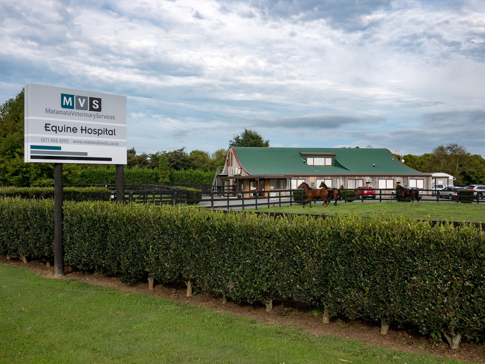

A purpose-built equine hospital with the diagnostics, surgical facilities, and specialist expertise to handle everything from complex lameness to critical care.
Our Hospital
Our hospital at 362 Hinuera Road, Matamata is a purpose-built equine facility equipped with advanced diagnostic imaging, surgical theatres, and dedicated recovery and stabling facilities.
We accept referrals from veterinarians throughout New Zealand and provide 24/7 emergency care for critically ill or injured horses. Our team includes board-certified surgeons and specialist clinicians with experience across the full breadth of equine medicine.
Refer a Patient
Hospital Capabilities
Full-facility digital X-ray imaging for detailed investigation of lameness, fractures, joint disease, and complex musculoskeletal conditions. Immediate high-resolution results for rapid diagnosis.
Advanced ultrasound for soft tissue assessment, tendon and ligament imaging, cardiac evaluation, abdominal examination, and reproductive work. Standing procedures with immediate imaging review.
Whole-body bone scan capability for detecting early stress fractures, soft tissue injuries, and subtle lameness that cannot be localised by conventional methods. One of the most powerful diagnostic tools available in equine medicine.
Many procedures can be performed safely under sedation in the standing horse, reducing anaesthetic risk and recovery time. Our facilities and expertise allow a wide range of standing surgeries.
Full GA surgical capability with experienced anaesthetists and board-certified surgeons. We handle complex colic surgery, orthopaedic procedures, and other cases requiring full general anaesthesia.
Referrals and emergency cases accepted at any time. Our team is experienced in managing colic, trauma, respiratory distress, neonatal foals, and other critical presentations with round-the-clock monitoring and care.
Referrals Welcome
We work closely with referring veterinarians and provide timely updates throughout the patient's care. Call us to discuss any case.